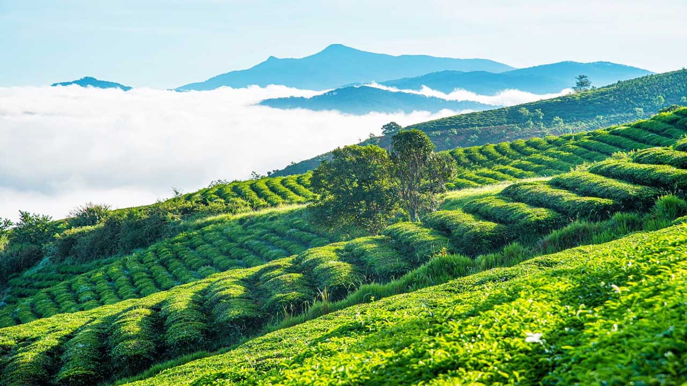
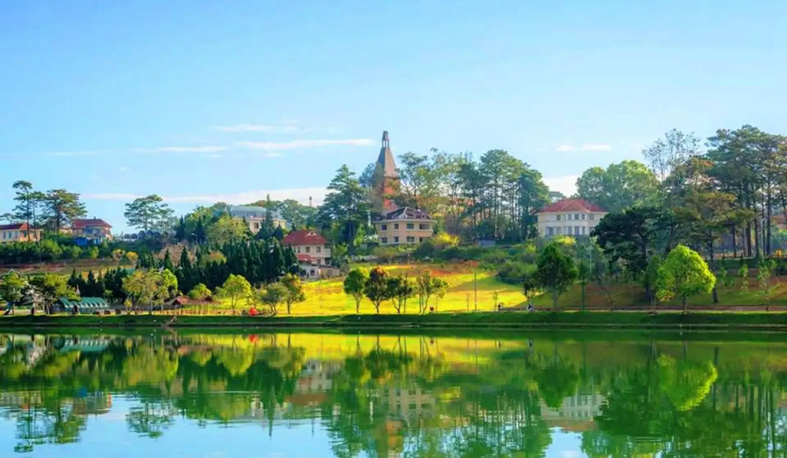
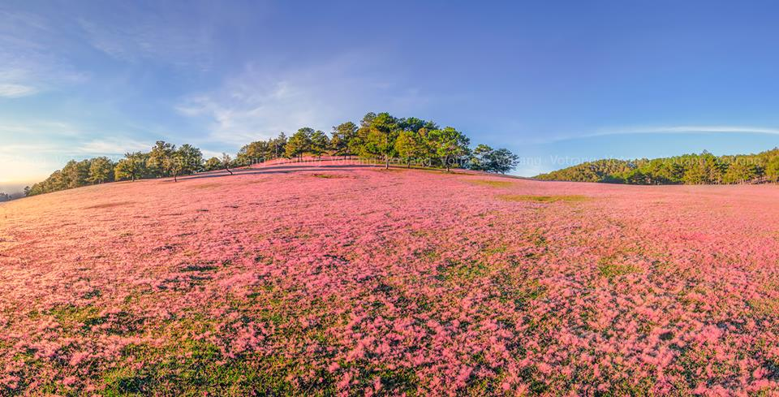
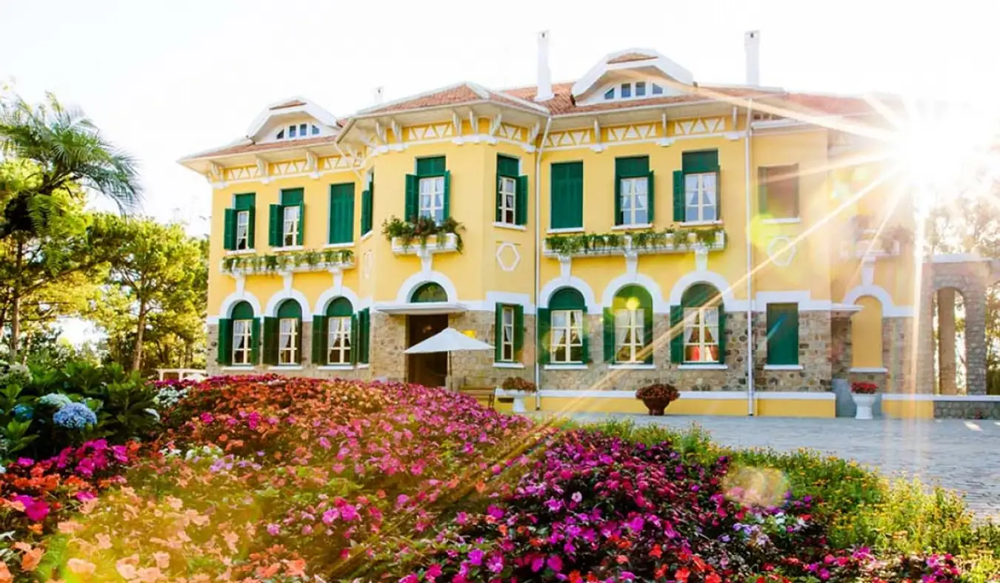
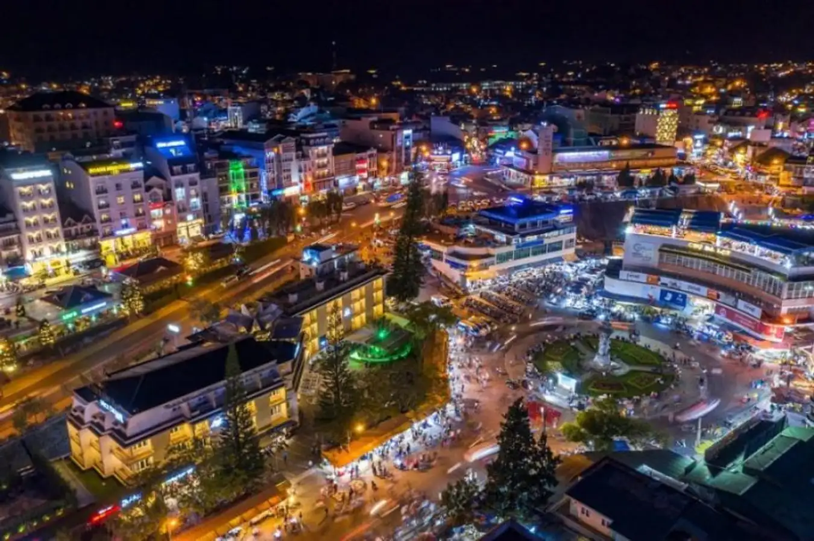
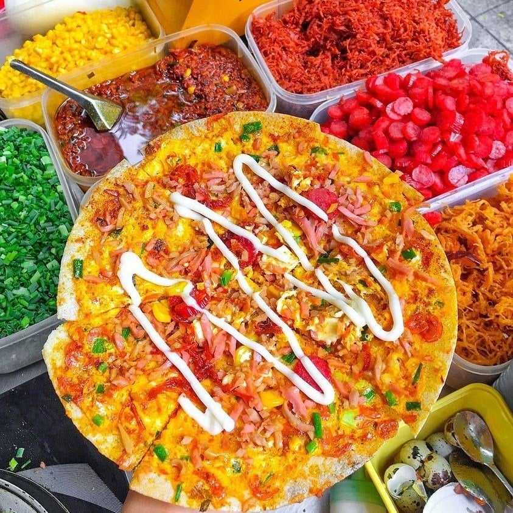
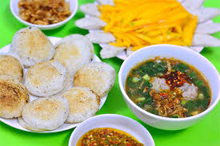
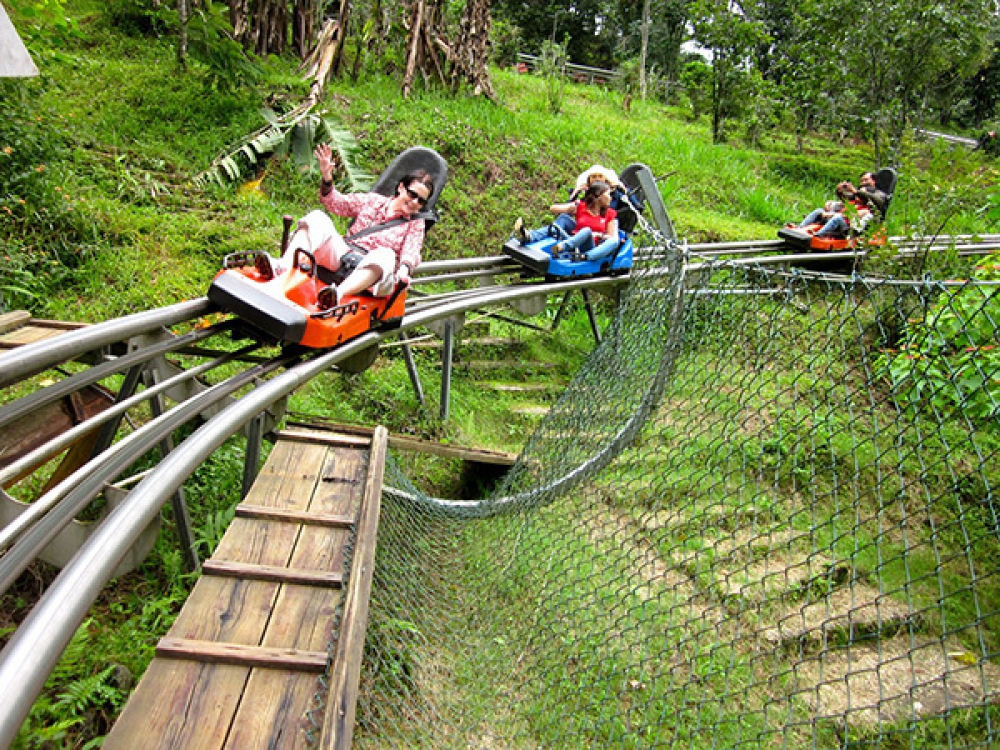
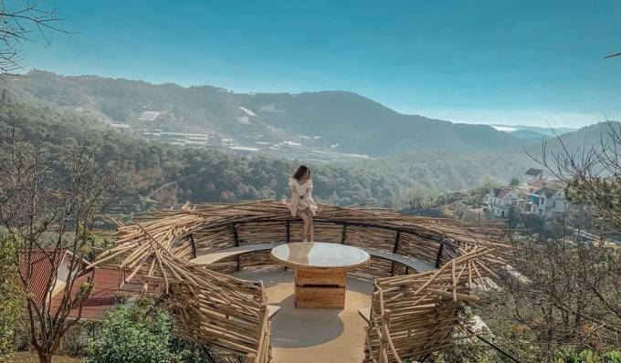

Cảnh đẹp
Đồi chè Cầu Đất

Nhiều người nói rằng đồi chè Cầu Đất được ví như “linh hồn” của xứ thông reo. Đồi chè Cầu Đất mang vẻ đẹp huyền bí của thiên nhiên. Tới đây bạn sẽ được tận hưởng cảnh vật và thiên nhiên trong lành, cùng với những bức hình đậm chất “miền quê thanh bình”.
Hồ Xuân Hương

Tới Đà Lạt, Hồ Xuân Hương là địa điểm mà chắc chắn bạn phải ghé qua. Tại đây du khách có thể tận hưởng sự yên bình của mặt hồ trong vắt, đón những làn gió nhẹ thanh mát hoặc ngắm nhìn dòng nước trong vắt nhẹ trôi.
Đồi Cỏ Hồng

Đồi Cỏ Hồng là thiên đường đối với những ai yêu thích vẻ đẹp nhẹ nhàng, thơ mộng. Đúng với tên gọi nơi đây, đồi có hồng hiện lên trong mắt du khách hình ảnh một đồng cỏ khoác lên mình một lớp áo hồng phấn đầy nhẹ nhàng nhưng vô cùng quyến rũ. Theo kinh nghiệm du lịch Đà Lạt, để có được những bức ảnh check In với Đồi Cỏ Hồng xinh đẹp nhất bạn nên sắp xếp thời gian du lịch từ khoảng đầu tháng 11 đến tháng 12 hàng năm.
Hồ suối vàng - Cây thông cô đơn

Hồ suối vàng hay còn gọi là hồ Dankla là nơi lý tưởng cho du khách tìm đến thư thả. Một không gian xanh tươi mát mẻ đầy sức sống hoang dã khiến các bạn trẻ nô nức kéo đến tham quan. Đến đây các bạn có thể tự tổ chức các buổi chèo thuyền, cắm trại trên bờ suối nhỏ, các buổi tembuiding để có được một ngày vui chơi trọn vẹn thoải mái nhất. Ngoài ra, đến hồ suối vàng bạn còn mang về những bức ảnh thiên nhiên có một không hai, với mặt hồ phẳng lặng, xa xa là những ngọn đồi trập trùng và hình ảnh câu thông đứng sừng sững, kiêu hãnh.
Dinh Bảo Đại

Dinh Bảo Đại hay còn được gọi là Dinh Vua. Đây là các tòa biệt thự lớn được gắn liền với Bảo Đại – vị vua cuối cùng của Việt Nam. Trong đó, Dinh I nổi bật với khu rừng tràm quanh năm tươi tốt, Dinh II mang đến vẻ đẹp cổ kính, truyền thông còn Dinh III lại có vẻ đẹp trang nhã, thơ mộng. Nếu bạn là người mê màu ảnh vintage thì Dinh Bảo Đại là nơi không thể thiếu trong hành trình vi vu Đà Lạt của bạn.
Chợ đêm Đà lạt

Chợ đêm ở Đà Lạt hay còn gọi bằng cái tên khác là chợ Âm Phủ, nghe tên có vẻ hơi ớn lạnh, nhưng lại là điểm đến vô cùng hấp dẫn, thú vị cho du khách khi đến tham quan.
Đến đây, du khách sẽ được trải nghiệm, mua sắm hay thậm chí là chỉ cần dạo quanh một vòng chợ là cũng đã đủ no căng bụng bởi vô vàn những món ăn đặc sắc và hấp dẫn.
Ẩm thực
Bánh tráng nướng

Một trong những món ăn quen thuộc thu hút du khách tại Đà Lạt, đặc biệt là giới trẻ đó chính là bánh tráng nướng. Chiếc bánh tráng nướng thơm ngon với đầy đủ loại nhân, kết hợp cùng chút mở hành, phô mai đã tạo nên hương vị đặc trưng, làm xiêu lòng bao thực khách. Với kinh nghiệm du lịch Đà Lạt, món ăn này sẽ hấp dẫn hơn khi ăn vào buổi tối Đà Lạt có chút sương lạnh đấy.
Bánh mì xíu mại
Bánh mì xíu mại – Với những ổ bánh mì quen thuộc, nhưng lại được xé nhỏ và chấm vào chén nước xíu mại nóng hổi với hương vị cay cay, đậm đà rất thích hợp với thời tiết Đà Lạt lành lạnh. Đây chắc chắn sẽ là món ăn sáng tuyệt vời để bạn khởi động một ngày khám phá thành phố sương mù nhé!
Bánh căn

Bánh căn là thứ bánh cực kỳ bình dân nhưng lại thu hút rất nhiều du khách nhất khi đến với Đà Lạt. Với nguyên liệu chính là gạo, những chiếc bánh căn thơm giòn ăn kèm với nước chấm pha mỡ hành, thêm mấy viên xíu mại. Chắc chắn sẽ là trải nghiệm khiên bạn nhớ mãi không quên.
Hoạt động
Khu vui chơi tại khu du lịch thác Datanla

Không tự hiện mà Datanla trở thành địa điểm vui chơi số một cho gia đình và nhóm bạn khi đến với Đà Lạt. Nơi đây sở hữu cảnh quan thiên nhiên vô cùng hũng vĩ cùng hệ thống khu vui chơi hiện đại. Tới đây, bạn sẽ được chiêm ngưỡng thác Datanla hoang sơ, khám phá những trò chơi mạo hiểm như: đu dây vượt thác, máng trượt xuyên núi, chèo thuyền vượt thác, zipline qua núi, .... Khu vui chơi mở cửa từ 7h-17h các ngày trong tuần. Hãy lựa chọn thời gian phủ hợp để trải nghiệm nhé.
Săn mây tại đồ chè Cầu Đất

Một trải nghiệm không thể bỏ khi du lịch Đà Lạt chính là săn mây, đón bình minh sáng sớm. Theo đó, để săn được khung cảnh mấy đẹp, bạn có thể đến đồi chè Cầu Đất vào lúc 5 giờ 30 phút cho đến 6 giờ sáng. Đến đây, bạn không chỉ ngắm được cảnh bình minh lãng mạn, mà còn được bao quanh bởi những đám mấy bồng bềnh, tự như "bồng lai tiên cảnh". Tuy nhiên, vào sáng sớm nhiệt độ tại đồi rất thấp, bạn nên trang bị thêm áo khoác nhé!
Chụp ảnh cùng những con dốc và cà phê bên thung lũng

Đặc sản khi du lịch Đà Lạt chính là những con dốc cao dựng đứng, các bậc thang cao, thoai thoải độc đáo. Với kinh nghiệm du lịch Đà Lạt của nhiều bạn, nếu muốn có bộ ảnh sống ảo cực chất với các con dốc, bạn nên chọn góc ảnh từ trên xuống, từ dưới lên hoặc chụp ngang từ xa, kết hợp với gam màu vintage nhé!
Di chuyển
Máy bay

Chúng tôi đang đưa vào khai thác kết nối các tỉnh thành trên cả nước với Đà Lạt với mức giá hợp lí và tần suất bay hàng ngày trong những khung giờ đẹp. Hơn nữa, bạn sẽ có cơ hội được chiêm ngưỡng cánh đồng hoa dã quỳ bạt ngàn khi hạ cánh xuống sân bay Liên Khương nữa đấy. Để đặt vé máy bay đi Đà Lạt giá ưu đãi, bạn hãy đặt vé tại website chính thức của chúng tôi nhé!
Ô tô

Bạn cũng có thể đến với Đà Lạt bằng phương tiện ô tô hoặc xe khách. Bởi, hiện nay đoạn đường đến Đà Lạt đã được tân trang với nhiều con đường cao tốc giúp bạn rút ngắn thời gian di chuyển. Tuy nhiên, vì nằm trên vùng núi cao nên quãng đường đi đến Đà Lạt bằng xe ô tô chắc chắn bạn phải vượt qua những con đèo quanh co và thoải dốc.